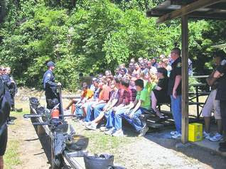
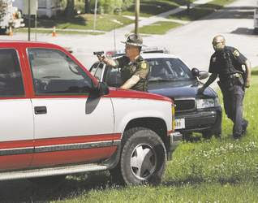
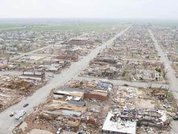

Breaking and entering: Where does this fit under the heading "To protect and serve"? A paramilitary "strike team" commits a felonious break-in of a home in the flood-ravaged Midwest.
Digging up the planted axioms that litter our ordinary conversations can be a revealing exercise. We learn how deeply rooted our supposedly free society has become in collectivist and militarist assumptions.
For example: How often do we hear or read language that draws a distinction between "police" and "civilians"?
Our republican framework of government supposedly prohibits the use of the military in domestic law enforcement. Yet if a police officer isn't a civilian, he of necessity must be considered some variety of soldier: He bears arms, belongs to a force organized in a military hierarchy, issues orders, and expects immediate obedience to his demands.
Police are supposedly civilian "peace officers," distinguished from the rest of the citizenry (to paraphrase Robert Peel) only by the fact that they are specially charged to protect the rights and property of the innocent as a permanent assignment, rather than an occasional necessity.
Yet when non-professional police officers are given "law enforcement" duties by local governments -- as in Gilbert, Arizona, where such people are part of a unit that can issue traffic citations and investigate accidents -- they are referred to as "civilian auxiliaries" of police departments. Again we see the critical distinction: The regular police are something other than civilians.
Roughly a year ago, USA Today reported that the wars in Iraq and Afghanistan had created a shortage of ammunition, leaving police and "civilians" at the back of the line. Annual police awards ceremonies across the country routinely honor not only law enforcement officers but "civilians" for various distinguished acts.


Cultivating a new crop of "law enforcement" officers: Teenagers participating in a summer police training program receive instructions from SWAT operators at a firing range.And, significantly, it is very common for "civilians" to be charged with "disobeying an officer" even when no other alleged offense is involved. That charge makes little sense unless it is assumed not only that police exercise authority akin to military personnel, but that common civilians are at the bottom of the hierarchy. Were this actually a country in which governments and their enforcement agencies derive their just powers from the consent of the governed, wouldn't it be possible to charge a police officer with "disobeying a citizen"?
As I mentioned above, these assumptions are usually buried and carefully ignored. But they are rudely exposed whenever crisis descends on a community and the familiar pretenses are blown away. Catastrophic natural disasters such as Hurricane Katrina or this year's Midwestern floods are eagerly embraced by law enforcement agencies as a pretext for overtly exercising the kind of power that many of them covertly lust to employ all the time -- the power to regiment their communities at gunpoint under a form of martial law.
Think, once again, of the roots of that expression: "Martial" has its origin in the proper name Mars, referring to the pagan deity of -- what activity?
The term unmistakably refers to a military posture, or a state of war. It is the suspension of normal life via force majeure, resulting in rule by unalloyed force. And the capacity for rule of this kind is embedded in every law enforcement body in every community across the country, simply waiting for an excuse to manifest itself.
Many who reside in our flood-ravaged Midwest are learning, as residents of New Orleans did before them, that our paramilitary "protectors" will eagerly exploit disasters in ways that compound the suffering inflicted by a natural disaster. Many citizens in such circumstances prefer to stay in their homes, running their own risks in order to protect what is theirs. But it is
standard operating procedure for police -- aided, at times, by National Guardsmen -- to force such people out of their homes, and to use the force of arms to prevent those who have left from returning.
In the wake of the floodwaters in Iowa came all of the impedimentia of military occupation -- armed guards, checkpoints, detention areas. These strictures were imposed on communities already reeling from a deadly caprice of nature. Rather than permitting people to inspect their own property, "strike teams" that included armed police broke into locked homes, including the occasional occupied dwelling.
One Cedar Rapids homeowner, understandably outraged that a "strike team" had broken into his otherwise undamaged home, confronted them and made his feelings known in forceful but measured terms. This prompted police officer Josh Bell to threaten the homeowner with arrest for "harassing" the "strike team."


The business end of government "compassion": Armed "protectors" arrest Cedar Rapids homeowner Ricky Blazek at gunpoint (left, below).That aggravated homeowner was relatively fortunate.
Fellow Cedar Rapids resident Ricky Blazek, one of several thousand flood victims reasonably infuriated by "checkpoints" preventing them from returning to their homes, tried to circumnavigate one such roadblock in his automobile. This resulted in Blazek being forced out of his car at gunpoint and arrested.

While the armed "strike teams" had unfettered access to homes of flood victims, and the media was given limited access in order to chronicle the supposed heroism of the government functionaries, homeowners basted in a seething broth of frustrated suspicion.
After all, would any thinking person feel secure knowing that government agents, freed by a natural disaster from the constraints of the pesky Fourth Amendment, had free rein to break into their homes and help themselves to anything they found therein?
Last year, the small town of Greensburg, Kansas was all but obliterated by a tornado of a ferocity not seen in the region since Dorothy Gale's house was rapted away to Oz and deposited rudely on top of Hillary Clinton's long-forgotten sister.
That's certainly more than enough for any town to suffer. However, the police establishment, displaying government's infallible gift for compounding tragedy, made matters immeasurably worse by barring residents from their homes and then selectively looting them for firearms (and, in some cases, jewelry and other valuables).


Gun Week reports that these thefts were made possible because officers "from various agencies" -- local and state police, the Kansas Bureau of Investigation, FEMA, and the ATF -- "allegedly claimed that martial law had been imposed when it had not, and ordered all residents to leave the town."Those residents who discovered the thefts and demanded the return of their firearms found them, in many cases, damaged to the point of being useless. A few opened gun cases only to discover that their firearms had been replaced with guns of inferior quality.
Bob Martin, an 83-year-old trap shooter, returned to his home the morning after the tornado to discover that several of his guns were missing. Like Ricky Blazek, Martin was originally barred access to his home by officers who claimed, falsely, that martial law had been declared by the municipal or state government. He was forced to take a circuitous route to his home; by the time he got there, his gun safe had been plundered.
After getting back several -- but not all -- of his guns (which had been damaged in police custody, Martin, along with his wife, moved out of Greensburg. He now regrets not shooting his way through the police barricade that kept him from defending his home and property.
"If I'd have known [that the martial law claim was a ruse, and the police were looting his gun collection], I had a gun of my own in the car, and I'd [have] loaded it and gone in," Martin says. "Ain't nobody going to keep me off my property."
Whatever it is that prompts a man in his ninth decade to take such a commendably militant stance toward the looters in blue, I earnestly hope it's contagious.
Provoked by the police crime wave that descended on tornado-ravaged Greenburg, the Kansas state legislature this year enacted HB 2280 (.pdf), a law that (per the official summary) "prohibits officials, during a declared state of emergency, from forcibly dispossessing an owner of any firearm not otherwise prohibited by law, or from requiring registration of firearms not required to be registered under state law."
Now, that bill was pockmarked with troubling qualifications (for instance, no peaceful and law-abiding citizen can properly be "prohibited by law" from owning any weapon he has the means to purchase and the skill to operate, "laws" holding otherwise notwithstanding). But the fundamental point here is of the "Well, duh" variety: Police shouldn't take advantage of natural disasters to steal firearms from citizens, any more than street crooks should capitalize on the opportunity to swipe consumer electronics from undefended retail stores.
Thus it is hugely significant that HB 2280, which only prohibits police from doing something they weren't authorized to do in the first place, was opposed by the Pratt County (Kansas) Sheriff, the Kansas Association of Chiefs of Police, and the Kansas Bureau of Investigation.
From their point of view, it's just not worth the trouble of having a natural disaster if the event can't be exploited to regiment local civilians and confiscate their firearms.
UPDATE: Submit or die....
Justin Raimondo of AntiWar.com offers the following capsule summary of the unpunished massacre of dozens of Iraqi civilians by a U.S. Marine unit in Haditha:
"When an IED killed one of his Marines, [SSgt. Frank] Wuterich and company shot everyone in the vicinity – including five unarmed men who were getting out of a taxi. Wuterich claims that the Iraqis disobeyed orders to stop and raise their hands over their heads, but others on the scene testify that they were complying and were shot anyway. Yet, whatever happened, Wuterich's working assumption – that the five harbored hostile intent toward him and his men – was and is undoubtedly correct. Because that's what imperialism is all about: occupying countries where you're hated by the locals, who are constantly trying to kill you. So naturally you get nervous and trigger-happy, and mistakes are made. That's the sort of war we're fighting and have to fight as long as we're in Iraq." (Emphasis added.)

Here we see how Iraqis living under an undisguised military occupation are expected -- on pain of summary execution -- to obey the orders of a foreign soldier. A variant of that mindset can be seen anytime an American citizen is arrested and charged with the supposed offense of "disobeying an officer's orders." And during periods of emergency rule, whether or not the condition is referred to as "martial law," those referred to as "civilians" in post-Katrina America can expect that they'll be treated with just a little bit more solicitude than Iraqis -- but not much.
Martial law, after all, is merely a military occupation conducted within our borders, rather than outside them.
And we should entertain no illusions about the fact that police agencies are deliberately re-tooling themselves into overtly military bodies. This can be clearly seen in -- among other things -- recruitment pitches like this one (courtesy of Radley Balko) from a SWAT team in Rome, Georgia.
 Available now!
Available now!Dum spiro, pugno!
42 comments:
Yet another good reason for extensive pre-planning, so all the things of value which aren't easily replaceable will not wind up in the gun safe or rec room of a "public servant." Sad day indeed when you have to worry more about a "state of emergency" getting declared where you live, and the subsequent plague of two-legged locusts descending on your home, than you do about the actual disaster.
What IS it with cops and shaved heads these days? It seems the blueshirts are aping the military look in every possibly way. I won't be surprised to see the general issuing of camo fatigues. Heck, they already have APCs.
I keep wondering when they are going to be brazen and drop the pretense of "protecting the public," as has happened with so many other things which used to remain hidden -- like torture.
I don't understand what the rationale behind not letting people back onto their property is. I don't think they have one besides command and control. Worst case scenario they stop you and tell you that if you get stuck, they won't help you. By putting yourself in danger by securing your property, you are not putting others or their property at risk.
will,
i honestly didn't know the TSA now responded to natural disasters. this is news to me.
i think some iraqis would suggest to booby trap one's house...but we'll never hear the end of that one.
Public enemy once had a song called "911 is a joke". did flavor flav's clock allow him to see into the future?
overall, this is appalling.
rick
Thanks to Mr. Grigg, for another superb post. It would have been interesting to see how the MSM would have responded in the event the 83 year-old had decided to shoot his way through the police barricade. I'm 49 and it certainly would have been difficult for me to exercise self restraint in that situation. The police state needs to be nipped in the bud before it's too late!
Anthony, Too late!
"no peaceful and law-abiding citizen can properly be "prohibited by law" from owning any weapon he has....the skill to operate..."
Maybe I am misreading this.
I could properly be prohibited from owning a weapon that I don't know how to operate?
T2T, that's a good point and a useful opportunity for me to offer an important clarification. I'd make the ability to operate a firearm a prudential limitation, rather than a legally enforceable one.
In other words: If I asked to sell guns to someone manifestly incompetent to use them, I'd decline to do so. No licensing or police interference would be involved; I'd simply decline the transaction.
No doubt there are people that think like you. The examples you cite of police thievery and misconduct might even be true on the face of this newest flood disaster--but it's probably more correct to add that it isn't the norm.
There's probably more people who did what they were instructed to do by law enforcement and didn't incur any of the hassle ricky or the old man received. For example, I wonder how many people were NOT ripped off or assaulted by the "pigs."
In the US, the common good is allotted to the majority--the folk that obey(whether blindly or not) the law. In times of emergency, is no time for discord; it only complicates.
Of course there are rogue units in the government-- just like society, but you'd be amazed how easy life is if you obey the law. Sometimes I think people just need an excuse to act up-- to manufacture an alternate reality, eh?
Who knows, they might win a lawsuit.
P.S. I got your story/link from conspiracyarchive.com. How ironic...
Thanks for the clarification. It is the "prohibited by law" part that scares me.
I had thought you were speaking of something that was passed by a lawmaking body and could properly be put into effect by the use of force.
themickey's-
After living close to the DHS/ICE raids of the Kosher meat plant in Postville Iowa, after the Parkersburg f5 tornado, and now after the flooding in Waterloo/Cedar Rapids, I can say with assurance that your statement,
"it is probably more correct to add that it isn't the norm. " is false. It IS the norm for FEMA, National Guard, etc to deny you your rights to your property. It IS the norm for the government to TELL you what is best for you. You see, it is for YOUR protection.
People I know tried to help the Parkersburg people after the tornado, and were told by FEMA that (FEMA) did not want their help-it didn't fit FEMA's "plan". They were also told by FEMA workers that it was very suspicious that a small town the size of Parkersburg would have 9 churches!!
Good piece, as usual, Will. I think the point of no return has long passed. The culture, uh...the people, uh...the government - aw heck what's the difference - is just too coarse and corrupt.
In other words: If I [was] asked to sell guns to someone manifestly incompetent to use them, I'd decline to do so. No licensing or police interference would be involved; I'd simply decline the transaction.
Obviously, what you said there is called self-government and that concept is all but unknown in the modern era among the commoners, uh citizens. So we should hardly expect to find any brighter bulbs and/or less corruption exhibited by government officials and their enforcement arm, the coppers.
Sigh...
I must admit that my innards sometimes desire to be among those who yell "Death to America!" "The Great Satan!" and such like, as the temptation to be, at minimal, a loather of America is very strong at times for me these days, unfortunately.
I have to actually ignore the news and focus my mind onto other more localized and mundane tasks periodically, just to retain a modicum of sanity and a positive outlook for the long term. I believe the world is fast becoming more like "the days of Noah" every day so, in any event, I guess we shouldn't be overly alarmed by these events.
In April of this year I was severely beaten by two corrections
officers, with hands cuffed behind
my back, in a N.E. Ohio city jail.
I am ommiting specifics, for the time being.I'm fully aware of the
inadvisability of ever giving a cop
any verbal or physical crap, and I
did not.At 58 years of age and not
in great health to begin with,I did
not need this.The two officers
simply took it upon themselves to
teach me the proverbial lesson.And
actually,they did, more than they will ever know (I can write fairly well).From the insult to injury dept., when I appeared in court the
next day,no one, other than fellow inmates,asked why I was limping or
why my left eye was jet black,
swollen shut(for three days)and
protuding an inch.Not one mention
from judge,bailiff, etc.
I have since been exonerated of the
charge, but even if I had been guilty, I would still be a victim
of crimminal assault.If I had done
this to a cop, I would be looking
at years in prison, possibly for
attempted murder of a law enforcement officer.
I'm not looking for sympathy here,
since I believe in Karma.But I will
continue to recite this incident
because it's being multiplied all
over the USA, to innocent,non-resisting men and women.It appears
that the chickens of brutality and
torture and murder that our tax
dollars continue to unleash around
the world, have come home to roost.
From: Jack D.
theMickey's: "...you'd be amazed how easy life is if you obey the law."
Except that very few (if any!) people know all of the law under which they happen to live. Perhaps that's the point, however. But also, would you consider it an easy life if your property were stolen or destroyed? Or if your house is broken into by mistake? Or if you're beaten and maybe even murdered for raising a conscientious objection (but not disobeying)?
From what I've read, "the law" today is so complex and labyrinthine that every one of us breaks a number of statutes every day of our lives without even knowing it. Apparently, government prosecutors (are there any other kind anymore?) can always find something to pin on us poor, hapless proles. What they lack is sufficient motivation and resources to do so more often -- along with the fact that, the more often they do it, the more visible it becomes to the rest of us. The last thing they want is for their legitimacy to be questioned any more than it already is.
If you dismiss all of the above, then I can only conclude that you're either happy in being enslaved to tyranny, or you're working for the self-proclaimed Powers That Be.
"world is fast becoming more like "the days of Noah" - Dixie"
Fast becoming? Au-contraire my dear friend. That day has long since passed. Look about you. We're LIVING it right now. No need to be surprised you've said so yourself.
When you've been swimming in the societal cess pool as long as we have then anything bordering on simple decency that rises above the pervasive stench must seem like sweet roses.
I haven't smelled any roses in a long time. Have you?
Robin,
Many departments already issue BDUs in blue, black or gray to officers. The shirt, tie, dress pants and shined leather have been replaced in many cases with quasi military gear. This is especially true for officers working 2nd and 3rd shifts. Unless they have the media riding with them. I noticed this trend starting over 10 years ago.
theMickey's:
Educate yourself through reading.
http://www.wtol.com/global/story.asp?s=8534945
And follow this blog for a few days reading the posts there:
http://waronguns.blogspot.com/
It is almost insane the daily amount of villainy by thuggery by the police that is documented there.
-Conan the Cimmerian
This is precisely the kind of thing the militia is meant to prevent.
In Federalist Paper No. 29, Alexander Hamilton clarifies that “well regulated” does not mean restricted, but rather well trained, armed, and equipped. Hamilton also distinguishes the militia, consisting of “a large body of citizens,” from what we now call the National Guard.
That with rights come responsibilities is widely if not universally accepted. So what is the responsibility that comes with the right to keep and bear arms? It’s in the opening phrase of the Second Amendment. "Owning guns and complaining to your representatives being sufficient to the security of a free state,..." Right? Well that’s what most gun owners seem to think.
For any who wish to take seriously the responsibility that comes with the right to keep and bear arms, I invite you to explore today’s militia at http://www.awrm.org.
We might surprise you, especially if you still believe what the mainstream media and groups like the SPLC say about us.
Peace
In response to Robin (5:29 AM):
If it looks like a duck, walks like a duck, and quacks like a duck, it's probably a duck.
Q: "Why did you get on the bus? Why did you go the concentration camp?"
A: "They picked up our children at the school. If we wanted to be with our children, we had to get on the bus. It was the police. They told us to get on, and we got on. "
When it is your turn to get on the bus, you will do the same.
So, the question is - what are Americans going to do when the next 'staged event' comes ripping through the 'news channels'? When martial law IS declared by the so-called 'president' and military troops are called out into the streets?
Just like during Katrina's aftermath, the floods and tornadoes are practice sessions of what will be done...of course, there will be MUCH more.
Please note...the US and Israel will be striking Iran soon and I pray to God that this is not the true beginning of the end of our Republic.
I just wish that we, Freedom-loving Americans, were better organized. We're not...we're all sheep.
As a resident of New Orleans both before and since the storm and flood, I have heard many many tales of looting and criminal activity perpetrated by the police and National Guard against the very people and property they were supposed to be protecting. It really hurts to lose that which was spared by the disaster only to have it taken by those who are supposed to be protecting you and your property. Didn't we already lose enough?
But it is inevitable the the ranks of the police will be filled by those same young persons who were trained for this work by their work in Iraq, etc. Many in the National Guard sent here were freshly back from Iraq.
With job opportunities declining here in the States, and funding for education being cut by historic proportions, and minimum standards for entrance into the military being reduced (actually nearly abandoned), many leave the military (if they can) and enter the ranks of the police.
It is not the best and the brightest out there charged with protecting the public.
In the name of "Protect and Serve," it is essentially giving a gun and a license to bully to everyone's idiot cousin with a mean streak. Add Post Traumatic Stress into this equation and you're pouring gasoline on a fire.
War is an abomination bequeathing a legacy of violence.
We the people are on our own.
Great article William. I really enjoyed reading it and believe you are spot on with your analysis.
Frankly a little jealous I did not write it. lol
I have a blog at www.DailyNewscaster.com
News from a Constitutional point of view.
D. H. Williams
P.S. I am going to add you to my blog roll.
Looting, plundering, beating, kidnapping, killing. The police have killed over 300 people in North America with their new toy - the taser.
Open your eyes.
http://excited-delirium.com/
You may have heard the expression "excited delirium." It is not a medical diagnosis or a medical condition, it does not exist in the medical literature. It only exists where the police are killing us and getting away with murder.
For crying out loud, the death squads are here. How much longer can we pretend that we live in a Constitutional Republic?
Thanks for the read. I cease to be amazed at the actions of the government in today's America. Is this supposedly free nation, even local police have begun subverting Constitutional law in the name of "keeping order". Government has failed the people. The people need to change the government. Black water mercenaries invaded citizens homes in the wake of Katrina and took their weapons after the citizens organized themselves into neighborhood watches to protect their communities. these types of actions are becoming increasingly common. All Americans should own arms to pretect themselves from tyranny.
I don't know about other states, but here in Vermont the "protect and serve" that used to appear on the sides of police & sheriffs vehicles has long since been replaced with "Law Enforcement"! These individuals are not working to protect & serve the people, they are working to threaten and harass.
I have decided to make my desire to serve as Vermont's governess known, because I fully intend to put a stop to this and plenty of other B.S. Every state that wants their rights & freedom back must eliminate their dependence on the federal teat! I am a secessionist, I am a constitutionalist and more individuals like myself must muster up the courage to run for their state offices and replace those that are corrupting and destroying their rights & freedoms, selling them off to the feds, like so many slaves.
I am in the process of getting my own blogs together, in hopes that I can both draw attention to my own efforts to serve the public in my state and to encourage others to muster their own courage up to do the same.
We only get the government we deserve, either by our own action or our inaction!
Lovemynola writes:
"But it is inevitable the the ranks of the police will be filled by those same young persons who were trained for this work by their work in Iraq, etc. Many in the National Guard sent here were freshly back from Iraq."
At the beginning of the Nazi movement, Hitler's SA (brownshirts) were almost entirely ex-soldiers who could not, or would not, reintegrate themselves into civilian society. It's doubtful that young Hitler himself (a spoiled brat turned street bum) would have risen to power had not the army taught him to kill as part of a disciplined unit. There was one fellow who definitely didn't need to "be all that you can be in the army".
The Iraq/Terror/Drug Wars are breeding all manner of monstrosities. A cruel, arrogant police force is one of them.
Long story short: the gloves are beginning to come off.
Martial Law has been instilled in the US since 17 Sept 1999.
They do NOT need to implement this to loot and plunder, as the greatest license they ever printed for looting and plundering was the Birth Certificate.
Fast becoming? Au-contraire my dear friend. That day has long since passed. Look about you. We're LIVING it right now. No need to be surprised you've said so yourself.
Me, surprised? Well, you caught yourself at the end there so you know the answer. If you've been around here and read the comments since the beginning of this blog you know for a fact this dog ain't surprised by much these days.
I meant by "becoming more like days of Noah" not merely because of the rampant violence and corruption we witness today, as we've always had that to various degrees in the world.
Rather, I was also speaking of the state of the culture at large and its ever expanding and eager embrace of bottom-feeding depravity. Like state-sanctioned homosexual "marriage," only previously prevalent at the level we see today during the time of Noah not before or since until the modern era, and naturally that militant group's use of the State to further its agenda.
While many appear to me to waste a lot of their energy and time verbally slapping around and down the Ecclesio-Leninists, the Lavender-Leninists, precisely because of government power at their beck and call, have been on the offensive and mounting full-scale attacks on the family.
Even though, so far, just the Kennedy heartland of Taxachusetts and the Hollyweird utopia of Californistan sanction the "marriage" aspect, New Mexico and Colorado have anti-discrimination measures on the books that make it nigh impossible to voluntarily not associate in any way with depravity-mongers!
Other states are in these folks' crosshairs. So far, thankfully, Virginia doesn't sanction any of it...yet, but we better be ready to do political, philosophical, and spiritual battle for the long-term or go to jail. I say "or go to jail" because being forced to embrace, accept, acquiesce to, and associate with this kind of refuse is where I'll draw the line in the sand.
And on another cultural front, when commoners merely stand around like deadwood and watch a slime ball beat a 2 year old boy to death, and do NOTHING!, I say we deserve to die as a society and a nation. Maybe we deserve the Carthage treatment. Just wipe us out and pour salt on the ruins.
I don't understand how people can put up with this garbage. You wouldn't pay someone to harass you constantly would you? I would say you were stupid if you did. Yet this is what we do when we are the ones paying the salaries of these thugs who harass us every day. They don't work for us by the way. They work for the crooks and politicians "legally robbing" us and harrassing us. I think it is time we made a change to cops who work for us, protect and serve us and harrass the crooks, politicians and criminals. I think they forgot what "public servants" stands for. We the people are not paying you to harrass us. The asshole politicians you are taking orders from are also "public servants" so if they are "making you do it" then they are enemys of the people and all enemys of the people will be dealt with accordingly.
...commoners merely stand around like deadwood and watch a slime ball beat a 2 year old boy to death, and do NOTHING!...
should be revised to:
...commoners merely [drive by like deadwood on a trailer] and watch a slime ball beat a 2 year old boy to death, and do NOTHING! [other than call 9-1-1]...
Sorry, I'd forgotten the precise details of that particular story, but nevertheless...
Are folk so terrified of possibly dying "unnaturally" these days that they're paralyzed by fear to act? Heck, death is a part of life and one can't even remotely enjoy life to the fullest without accepting the possibility and risk of death in any truly worthy endeavor as a given.
Any citizen who witnessed this atrocity transpiring should've STOPPED themselves and subdued the cretin, or put a bullet in his head.
But no, it took a copper (argh!) in a chopper landing in a field to do it...way too late to save the boy, of course.
Will...
You always say some good things, yet you still think like a brainwashed public school grad.
First, for all intents and purposes, the CONstitution is dead! Remember that MOST folk in 1788 did NOT like it or vote for it.
Second, the framers did NOT want a Bill of Rights, and when proposals were submitted to them, they changed them to suit themselves.
Third, the term "People" in the document and term "Citizen" are NOT the same. Note how the term People is used in the first amendment. Why the change in wording for the last clause? Why was word People included there? Why is the second amendment only guarantee of right to bear arms to the people? [not citizens]
Fourth, what happened to the Posterity of the Rebels of 7-4-1776 who did volunteer to come under the CONstitution?
Five, what authority did the framers of the Constitution have to make anyone submit to it?
Six, since governments are the artificial creation of the minds of men and do not exist in nature, and not a natural phenomenon, from whence do they derive their authority to order ANY of the People?
Seven, Since ALL government AUTHORITY, not power, is derived from persons of the People, where an individual has no individual authority in a matter to delegate to legislators, there can be no authority behind any such statute.
Eight, a diligent study in fundamentals when reading the 14th Amendment will reveal that US Citizens have NO rights. That is 2nd class and all "citizens of the US are SUBJECT to it."
Nine, there still exist, those of us who are of the Posterity of the Rebels of 7-4-1776, and not US Citizens. Over such persons, no government has any authority, except for common law crimes. Doubt me? I, and others, have proven in courts of law!!!
Have a nice day!
All conspiracy freaks UNITE!! LMAO
Talk about martial LAW and a control freak???!!!
"Comment moderation has been enabled. All comments must be approved by the blog author."
Maybe we should be worried about YOU stealing our guns and jewelry.
Get a job fool. I bet you don't have the guts to post this response mister blogger!
Comment moderation is simply the assertion of a property right. It's not a form of censorship, as the presence of your ill-fated foray into irony demonstrates.
I see that you're as unfamiliar with the notion of property as you are with the concept of effective humor. I'm just taking a wild stab in the dark here, but I'll bet that you "work" for the State in some capacity.
Cheers!
A wicked,perverted nation which has rejected the God who gave us freedom gets the leadership it deseves.
The arrogance and pomposity of many of these ego driven, power drunk black shirts is one of many aspects of God's judgment upon America as are the 7,000 dry lightning strikes and 1,000 resulting unprecedented fires on burning,perplexed gay California.
Pretty slick - when nature occasionally becomes nasty it's used as a convenient justification for leisurely searches and burglaries by police. Does it really require an act of the legislature to remind the police that gun ownership isn't illegal? For that matter, is there anything that the "authorities" can't do (or try to get away with) when martial law is declared?
That was a brilliantly written article.
Dixie... Sorry for the lateness of this response. I don't visit every day.
That piece on the child beaten to death is disgusting and yet paints a portrait of inner rot within this society. I can't say what I'd do, if I saw such a thing, but my heart says I'd intervene and stop it.
I've found that there is so much evil going on around us that to take it all in is too much for the senses and I just want to tune it all out. Every day there are more and more revelations that would break any rational man. That is why, like you, I have to deal with what is immediately about me. Love the ones I'm with, the family, because they're the most important people in my life.
Many conspiracies exist, but none as horrible as the US government sponsored child prostitution. The Red Alert Newsletter exposes more atrocities as well as provide solutions to those problems.
We are taking names and IP numbers.
Post a Comment